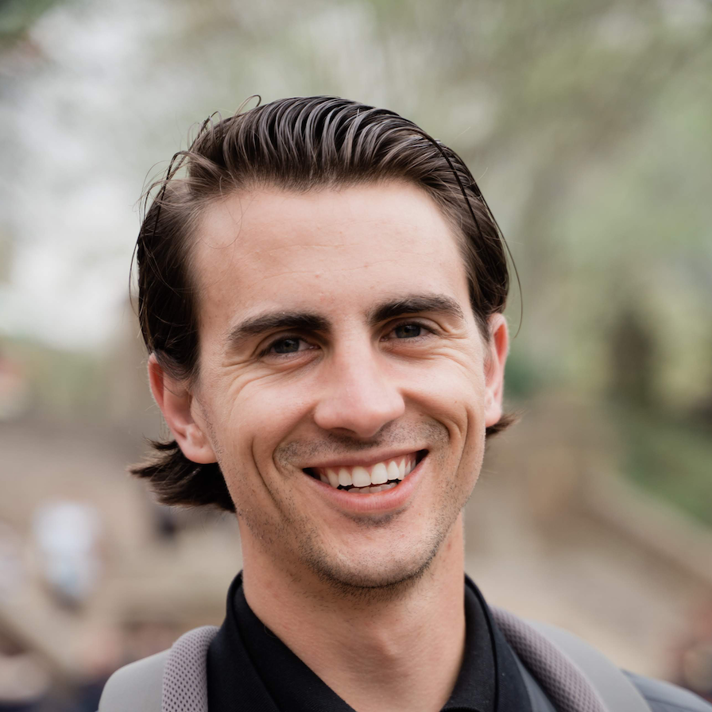
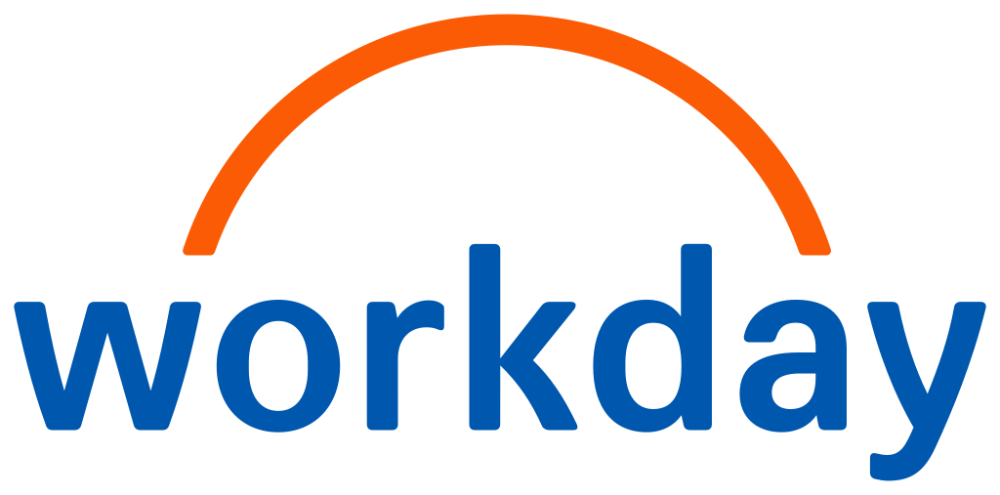

An AI research agent embedded in W&B. Talk to your experiments, runs, artifacts and visualizations in natural language. The north star is an always-on agent that proposes hypotheses, launches experiments on cloud GPUs, and iterates on your behalf.
Principal Software Engineer, Weights & Biases
I build CoreWeave ARIA, a research agent for ML teams, and lead Weave, an open-source toolkit for tracing and evaluating AI applications.

An AI research agent embedded in W&B. Talk to your experiments, runs, artifacts and visualizations in natural language. The north star is an always-on agent that proposes hypotheses, launches experiments on cloud GPUs, and iterates on your behalf.

WorkdayProduct Manager, Search & ML2015 – 18